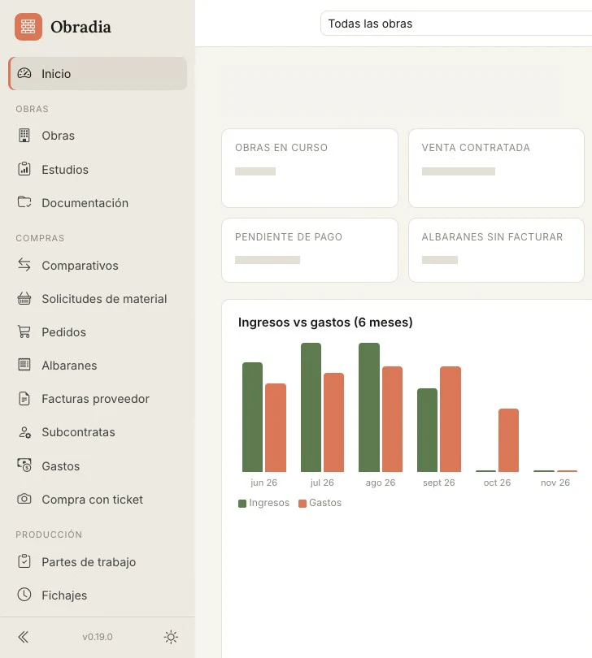
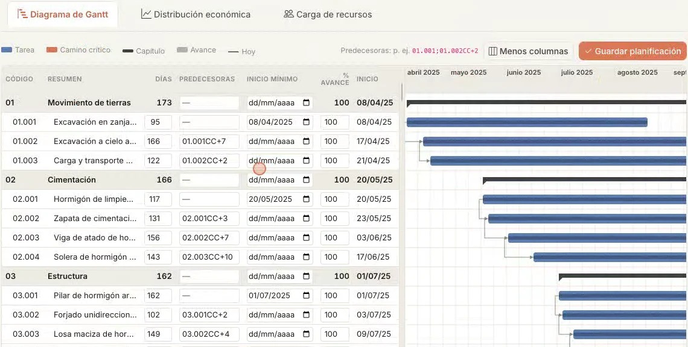
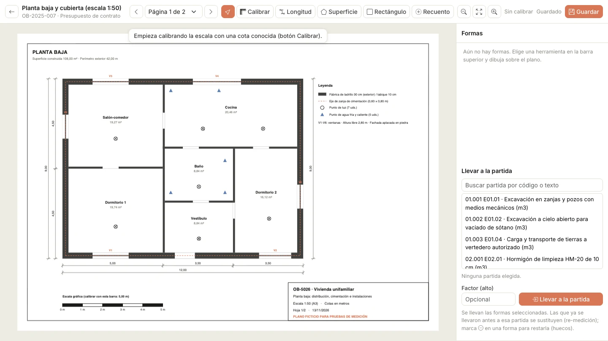

Sepa cuánto le cuesta cada obra.
Conecte presupuestos, compras y trabajo en obra para comparar el coste real con lo previsto mientras aún está a tiempo de actuar.
De la foto de un albarán al coste real de la obra
- Fotografíe el albaránDesde la obra, con el móvil.
- Revise lo que lee la IAExtrae proveedor, fecha, líneas y totales y avisa si detecta incoherencias.
- Vincule el albarán a la obraImpute las líneas al presupuesto, actualice lo recibido del pedido y registre la entrada en el inventario.
- La factura se conciliaCon sus albaranes, y la persona responsable la firma con PIN.
- Consulte el impactoVea el coste en la cuenta de explotación y las desviaciones frente al presupuesto.
Así se ve el portal






Su equipo conectado. Su obra bajo control.
El jefe de obra, Administración y Gerencia necesitan ver la misma realidad. Obradia conecta compras, producción, certificación y control económico para que todo el equipo trabaje con la misma información.
Información en un solo sitio
El presupuesto, las compras y el margen real dejan de vivir en programas, papeles y hojas de cálculo distintos.
Revisiones al día
Los albaranes llegan desde la obra con una foto, las facturas se concilian con ellos y queda registrado quién las aprueba.
Desviaciones a tiempo
Compare lo previsto con lo real cada mes y actúe mientras la obra sigue en marcha.
Todo el ciclo de la obra, conectado
Albaranes, partidas, certificaciones y cuenta de explotación trabajan juntos, con exportaciones a Excel y PDF.
Presupuestos y planificación
- Importación y exportación .bc3, con coste y beneficio separados.
- Banco y generadores de precios, versiones y estudios de licitación.
- Medición sobre planos PDF y desde modelos BIM (IFC).
- Borradores de partidas con IA a partir de una memoria. Revise cantidades y distinga precios de su banco y estimados.
- Gantt con camino crítico, líneas base y carga semanal de mano de obra y maquinaria.
Compras e inventario
- Solicitudes de material con aprobación automática por debajo del umbral que fije su empresa y conversión a pedido.
- Comparativos de ofertas, adjudicación y seguimiento de lo pedido, recibido y pendiente.
- Lectura con IA de albaranes y facturas en PDF o foto, y de tickets desde el móvil. Revise los datos antes de registrarlos.
- Firma de facturas con PIN y conciliación con sus albaranes.
- Inventario por obra y almacén central.
Subcontratas
- Contratos por obra, por partidas o a precio cerrado.
- Certificaciones a origen con la factura enlazada.
- Retenciones de garantía y previsión de devoluciones.
- Documentación de obra, proveedores y subcontratas con avisos antes del vencimiento.
Obra y personal
- Partes de personal y maquinaria desde el móvil, con dictado por voz y revisión del borrador.
- Fichajes validados por el encargado y comparados con el cuadrante semanal.
- Entrada y salida por QR para visitas y subcontratas, sin cuenta.
- Diario de obra y actas semanales firmadas, con fotos y exportación a PDF.
Calidad y garantías
- Plantillas de inspección y plan de calidad por obra.
- Visitas con fotos y firma en pantalla, en PDF.
- Incidencias situadas sobre el plano, con fotos y responsable. Tareas con comprobante de cierre.
- Expedientes de garantía con los plazos de la LOE.
Control económico
- Certificaciones por espacios o porcentaje de partida, con revisión y liquidación final.
- Propuestas de factura con retención y registro de cobros.
- Explotación mensual con costes propios y comprometidos, y desviaciones por partida y capítulo.
- Flujo de caja con cobros y pagos reales y previstos, y exportación para la gestoría.
- IVA por obra, incluida la inversión del sujeto pasivo.
La factura se emite en su programa habitual.
Equipo y comunicación
- Roles y permisos: cada persona ve lo que necesita.
- Buscador de obras, proveedores y documentos, y avisos de firmas y propuestas pendientes.
- Informes semanales o mensuales por rol o persona.
Catálogos y empresa
- Directorio de clientes e importación desde Excel de usuarios, proveedores y materiales.
- Personal y maquinaria con su coste por hora.
- Imagen de empresa y cuatro temas visuales en el portal, cada uno con modo claro y oscuro.
- Copia de los correos que elija en un buzón de archivo.
Clientes y proveedores
- Comparta avance, fotos, documentos y certificaciones en un portal de solo lectura por obra, con acceso por enlace y sin registro.
- Envíe un enlace aparte para aprobar o rechazar extras. Los aprobados pasan al presupuesto.
- Pida precios a proveedores por enlace y reciba sus ofertas en el comparativo, sin que tengan que crear una cuenta.
Cada perfil, con lo que necesita
Jefe de obra
Registra albaranes y partes desde el móvil, firma facturas, certifica y prepara actas con fotos. Accede solo a sus obras.
Dirección y producción
Reúne presupuestos, comparativos, pedidos, subcontratas y planificación, y consulta las desviaciones de todas las obras.
Administración
Concilia facturas, aprueba solicitudes de material, envía propuestas a facturación y registra cobros. Exporta compras y gastos para la gestoría.
Gerencia
Consulta el margen real de cada obra y de la empresa, mes a mes, y recibe un resumen semanal por correo.
Encargado
Organiza el cuadrante, valida y corrige fichajes, registra partes y consulta la presencia en sus obras.
Operario
Ficha la entrada y la salida desde el móvil y consulta sus fichajes, sus horas y su cuadrante semanal.
Los datos de su empresa, protegidos y a su alcance
Base de datos propia
Cada constructora trabaja en su propia base de datos, separada de las demás.
Historial de cambios
Queda registrado quién crea o modifica cada dato y cuándo. Los registros de presencia se anonimizan al vencer su plazo de conservación.
Cada persona, lo suyo
Cada persona accede a las obras y funciones que le corresponden. El inicio de sesión se bloquea tras intentos fallidos.
Soporte con su permiso
El personal de soporte se identifica con doble factor. Solo accede a su empresa con autorización temporal y cada acceso queda registrado.
IA bajo su control
Elija Claude, OpenAI o un modelo local que mantiene los documentos en su red, o desactívela.
Sus datos, a su alcance
Exporte presupuestos en .bc3 y listados e informes en Excel y PDF cuando lo necesite.
Compatible con sus herramientas
- App instalableUse Obradia en ordenador, tableta o móvil.
- PrestoImporte y exporte presupuestos en formato .bc3.
- Excel y PDFExporte listados, informes, actas y certificaciones.
- GestoríaDescargue en Excel las compras y los gastos del periodo.
Empiece con una de sus obras
Recupere lo que ya tiene
Importe el presupuesto en .bc3 y cargue proveedores y materiales desde Excel.
Invite a su equipo
Importe los usuarios desde Excel, asígneles un rol y dé acceso a las obras que les correspondan.
Ponga la obra en marcha
Use la lista de puesta en marcha para revisar qué datos y pasos faltan antes de empezar a registrar la actividad.
Vea Obradia con una de sus obras
En una hora le mostramos cómo importar su presupuesto, registrar albaranes y consultar el coste de la obra.
Escríbanos a obradia.net@gmail.com.